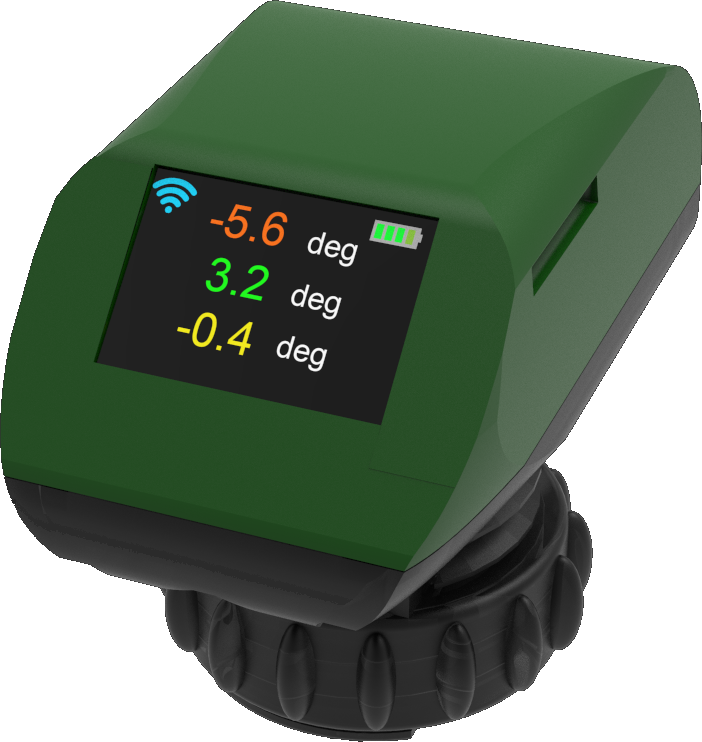
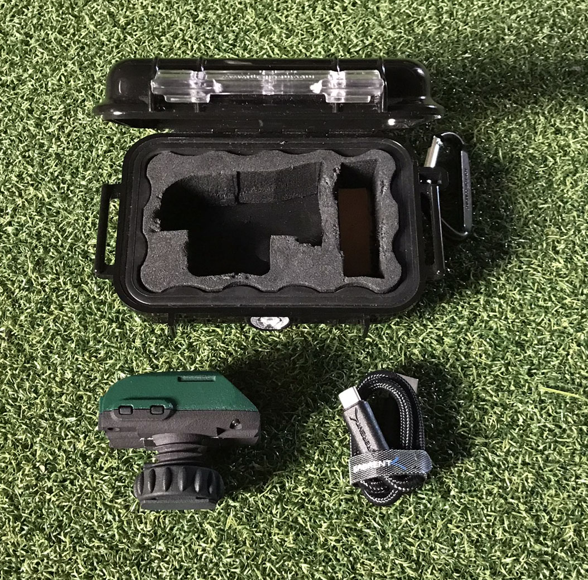
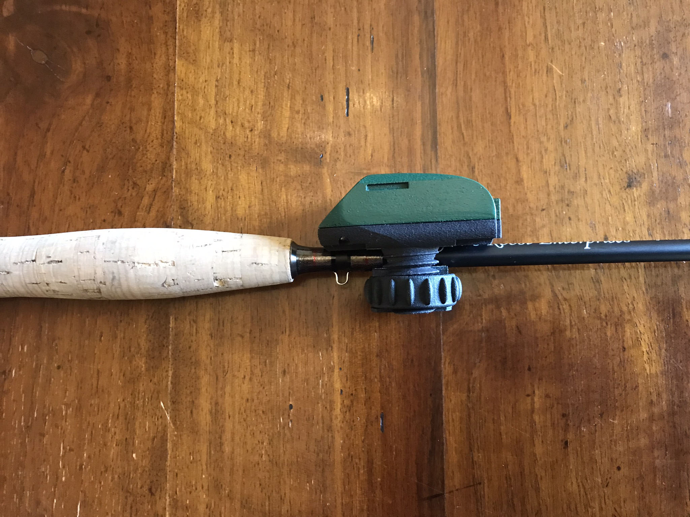
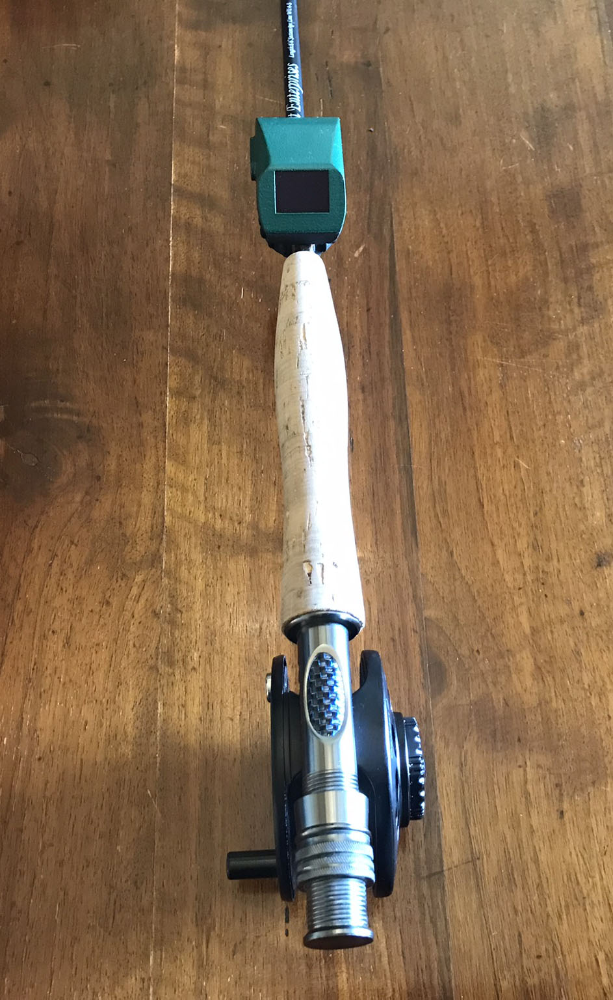
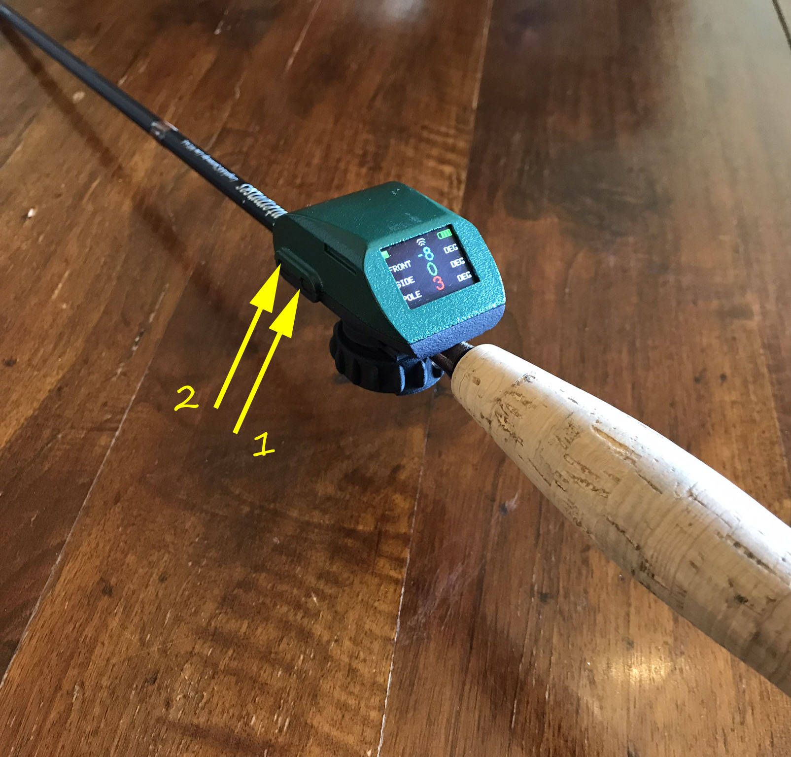
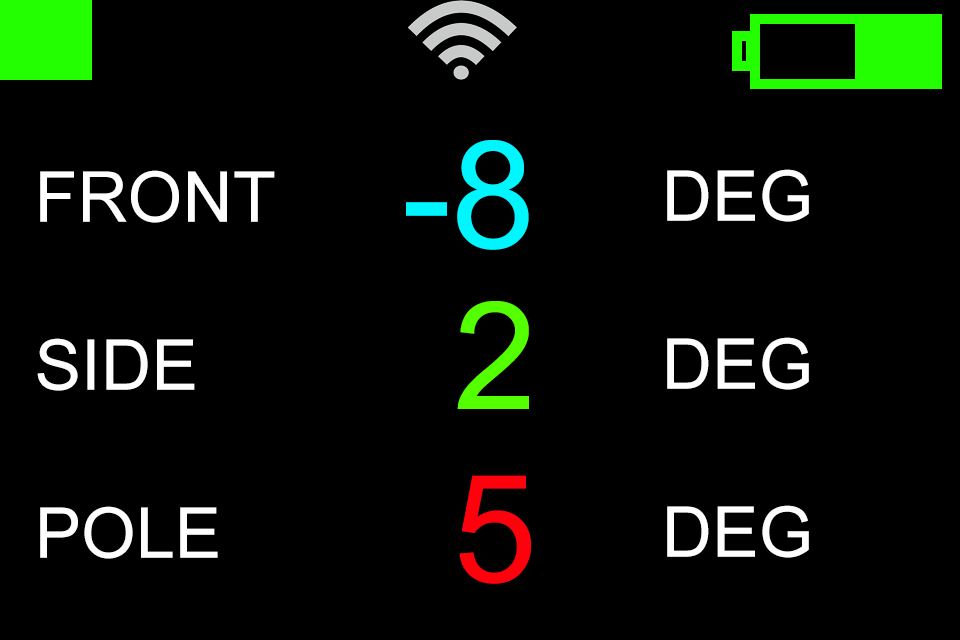
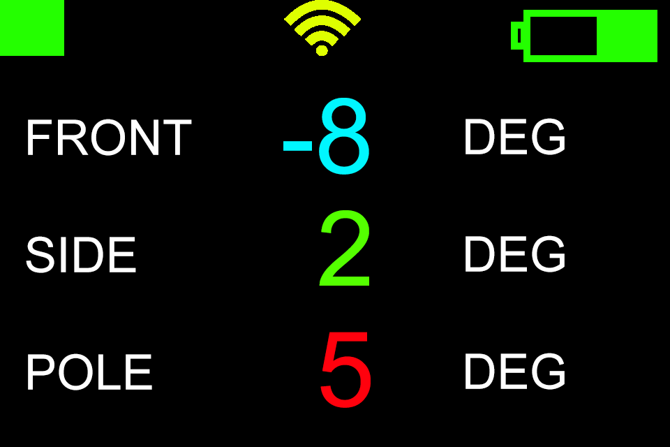
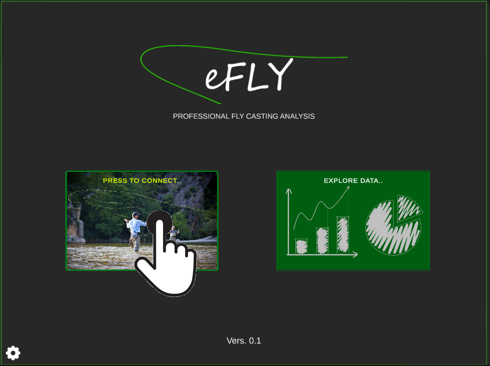
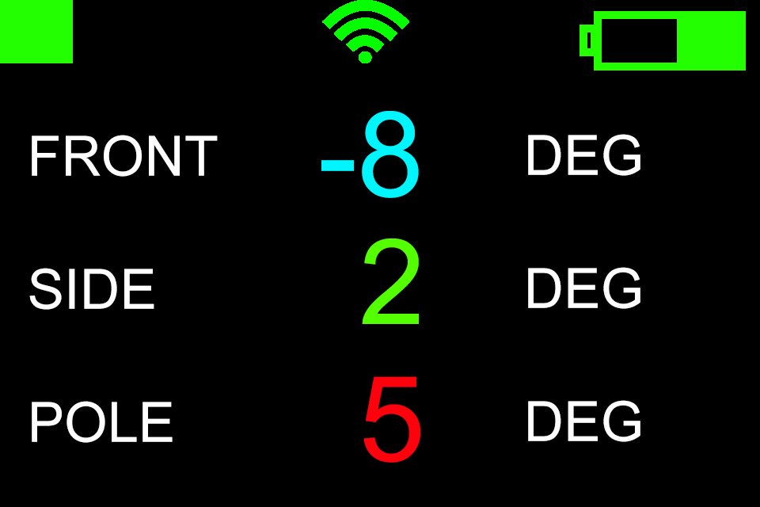
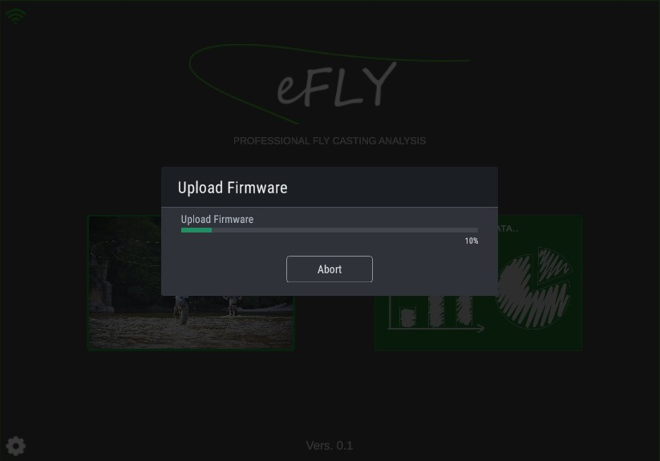

Setup your eFly
Package Content

The waterproof technical box of eFly contains the sensor and the USB-C power cable. The box is equipped with a practical carabiner that allows it to be safely hooked.
Charge
The sensor battery can be charged using a simple smartphone charger. It is recommended that you always fully charge the sensor before use. The loading time is approximately fifteen minutes. Battery life is approximately ninety minutes. In the event of low temperatures (below ten degrees centigrade) or high temperatures (above thirty degrees centigrade), the duration of the charge can undergo even substantial decreases.
Mount on the fishing rod
The sensor is equipped with a convenient knurled ring nut that allows it to be fixed to the barrel axis by adequately modulating the clamping force. It is important that the sensor is tight enough to avoid any rotation during the cast. At the same time it must not be too tight to avoid damaging the fibers of the fishing rod. The mounting direction is with the screen towards the handle so that the angler can easily read the values during the casting action.

The rotation around the axis determines the definition of the zero of the reference system. It is therefore necessary to align the sensor taking as reference the position of the reel which is facing downwards.

Switch on the sensor
The black screen (when the sensor is charged) indicates that the system is turned off. To turn it on, simply press the button briefly. After a quick welcome screen, a triplet of numbers appears which varies according to the movement of the sensor which is currently on. To turn it off, press and hold button 1 until "SEE YOU SOON" appears.

Connect the App

Let's consider the sensor screen. Before connection, the Wi-Fi symbol
- Connect the sensor to the Wi-Fi of the device (SmartPhone, iPad, Tablet). The sensor Wi-Fi name contains "eFly". Once connected, the Wi-Fi symbol on the sensor turns yellow.

- Start the app and press the button "PRESS TO CONNECT.."

In a few moments the app is connected to the sensor. The main software interface opens and the Wi-Fi symbol on the sensor screen turns green.

Firmware Update
After the sensor is connected, the firmware upload will start automatically if a new version is available. It is possible to skip this procedure by clicking on "Abort", but it is strongly discouraged as it could negatively affect sensor performance and communication with the app.

Once the procedure is complete the sensor will disconnect and restart.